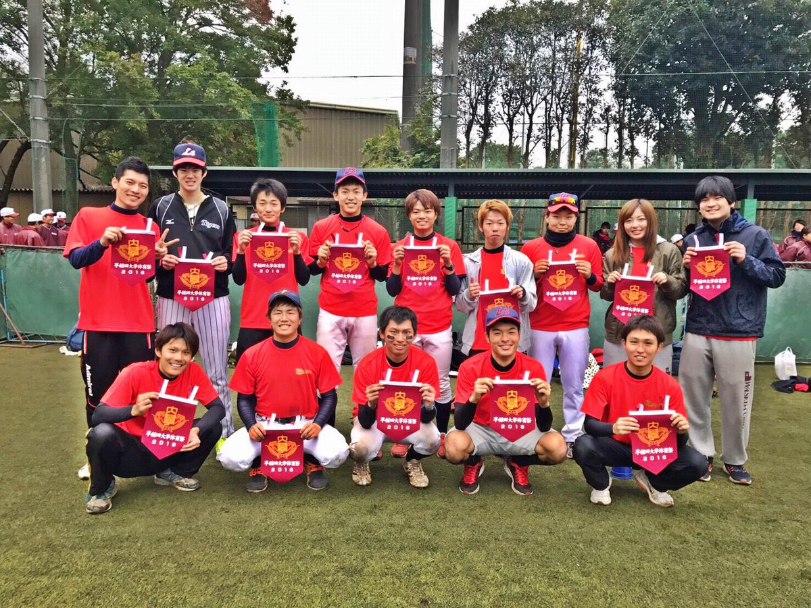
history
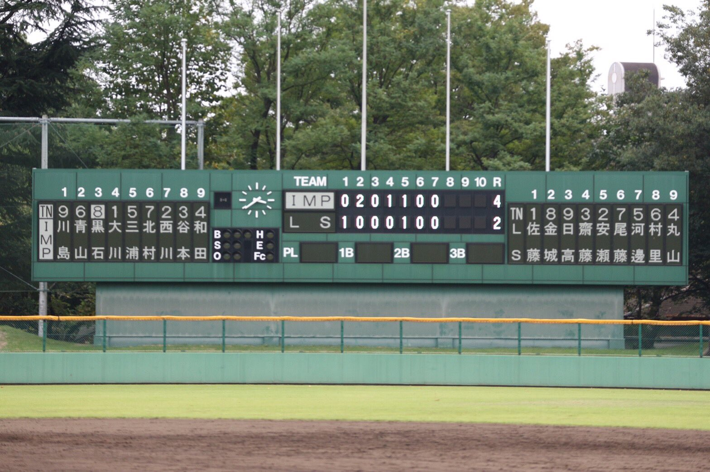過去の戦績
2019年
-
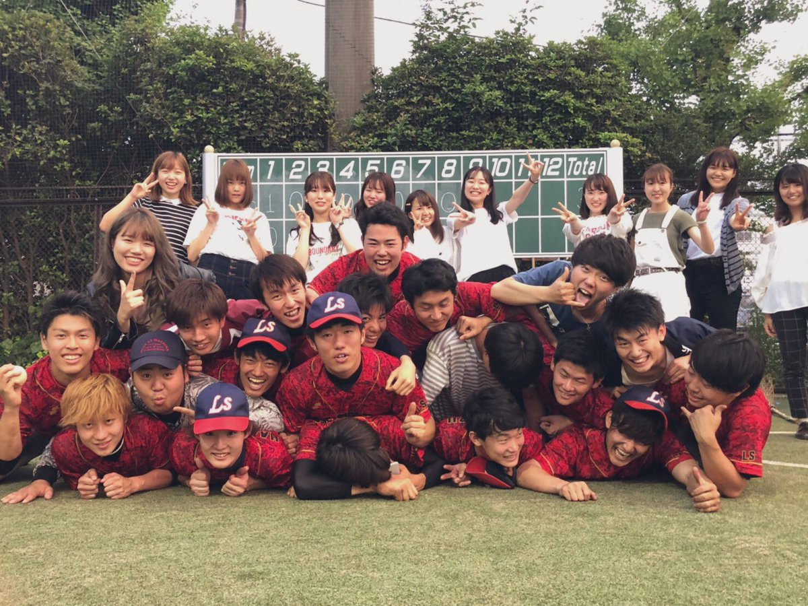
- 早稲田リーグベスト4
- 統一リーグ優勝
- 関東大会１回戦敗退
予選リーグ第1試合 vs セレクト ○ 2-0
予選リーグ第2試合 vs アカネッツ ○ 8-2
決勝トーナメント1回戦 vs ワイルドダックス ○ 1-0
決勝トーナメント2回戦 vs W.B.C. ○ 4x-3
決勝トーナメント準決勝 vs デスペラード ● 0-2
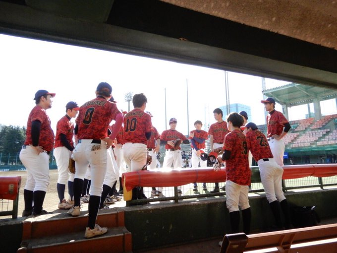準決勝 vs わせめっつ ○ 8-0
決勝 vs チャリオッツ ○ 5−4
1回戦 vs パイレーツ(早稲田大学) ● 2-5
2018年
-
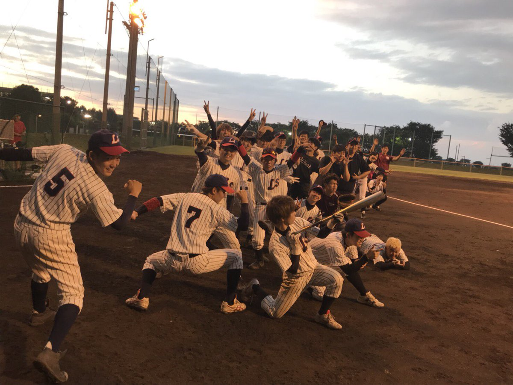
- 早稲田リーグベスト16
- 統一リーググループ準優勝
- 統一リーググループベスト4(4年生チーム)
予選リーグ第1試合 vs グランドスラム ○ 8-1
予選リーグ第2試合 vs LAVAS ○ 5-2
決勝トーナメント1回戦 vs アカネッツ ● 7-8x
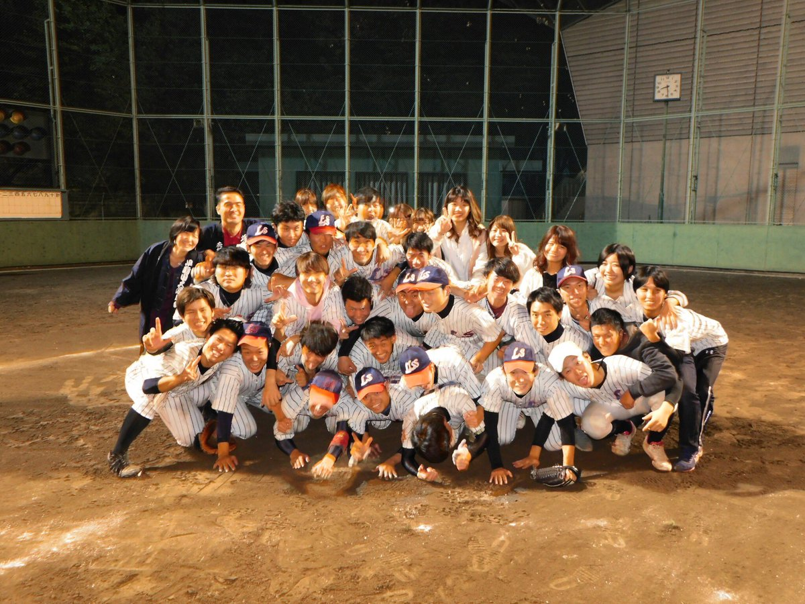1回戦 vs グランドスラム ○ 4-3
2回戦 vs アップセッターズ ○ 6-1
準決勝 vs インパルス ○ 5x-4
決勝 vs W.B.C. ● 0-2
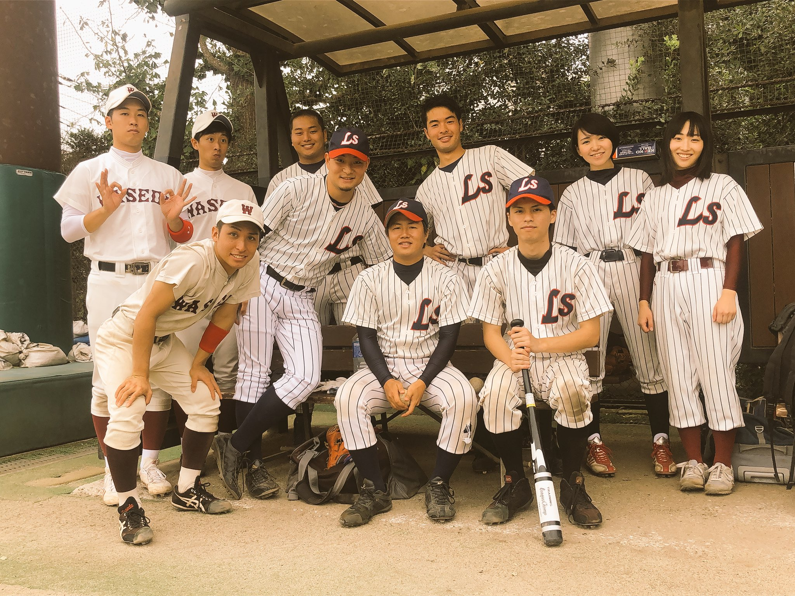1回戦 vs セレクト ○ 10-0
2回戦 vs マスタード ● 7−8
2017年
-
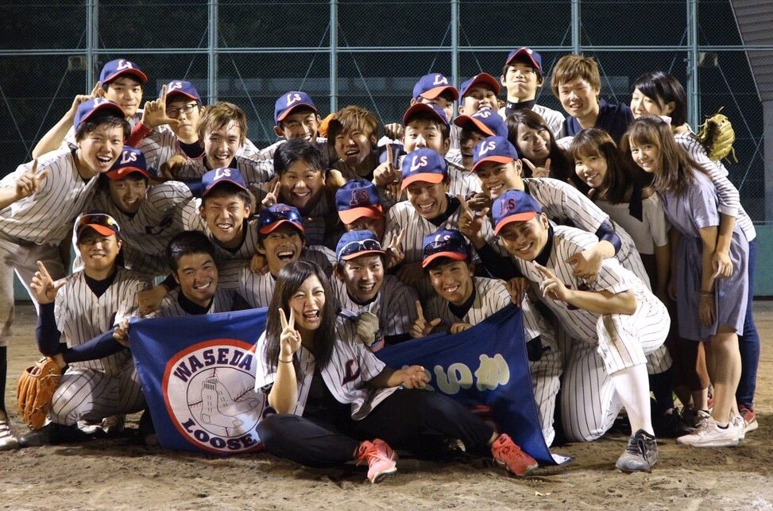
- 早稲田リーグベスト８
- 統一リーググループ準優勝
- 早稲田大学体育祭(総長杯)ソフトボールの部優勝
予選リーグ第1試合 vs W.B.C. ○ 2-1
予選リーグ第2試合 vs アカネッツ ○ 11-2
予選リーグ第3試合 vs non-limits ○ 7-6
決勝トーナメント1回戦 vs ノーバイス ○ 12-5
決勝トーナメント2回戦 vs ワイルドダックス ● 0-3
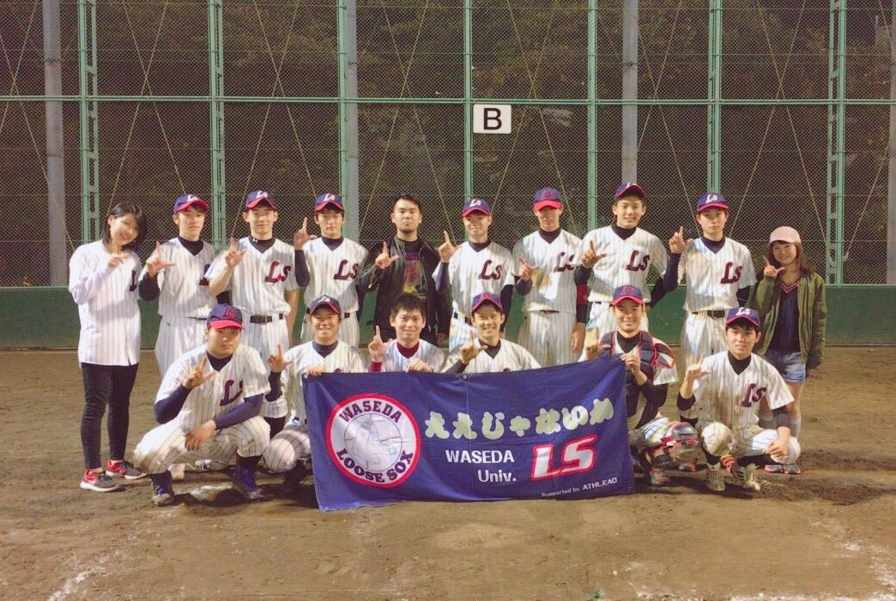1回戦 vs Deweys ○ 5−0
準決勝 vs 江戸の会 ○ 2-1
決勝 vs ペガサス ● 1-2x
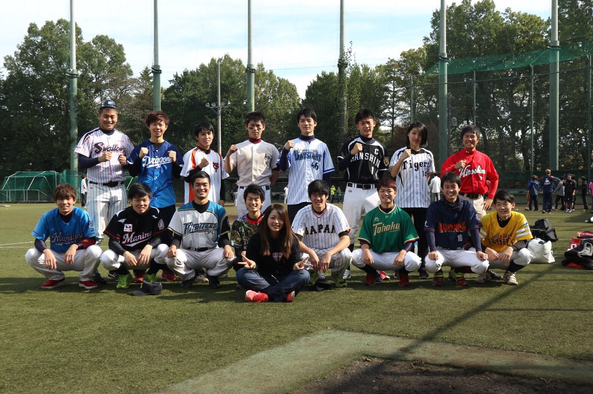2016年
-
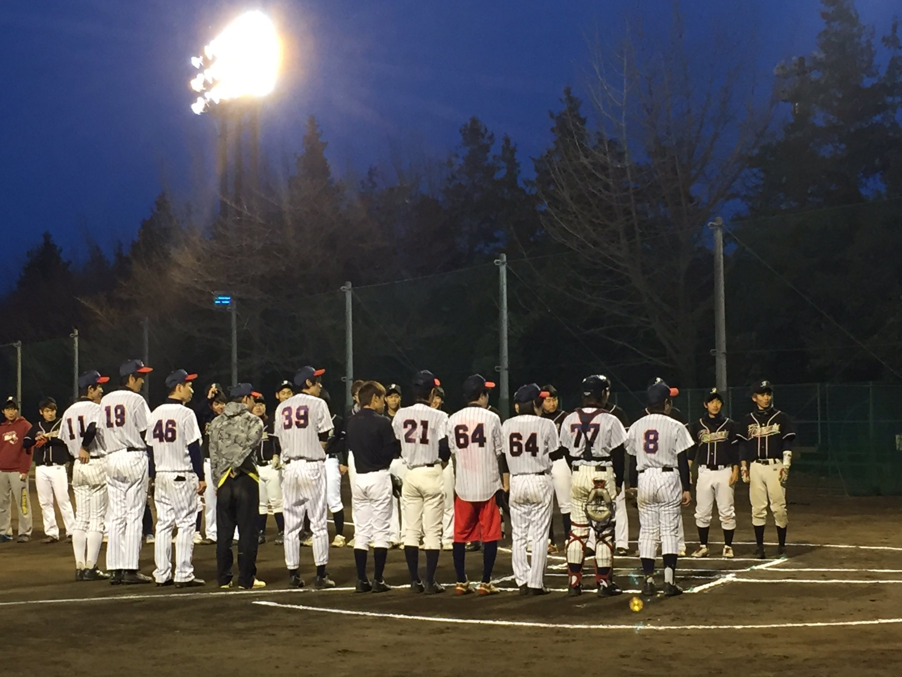
- 早稲田リーグ予選敗退
- 統一リーググループベスト４
- 早稲田大学体育祭(総長杯)ソフトボールの部準優勝 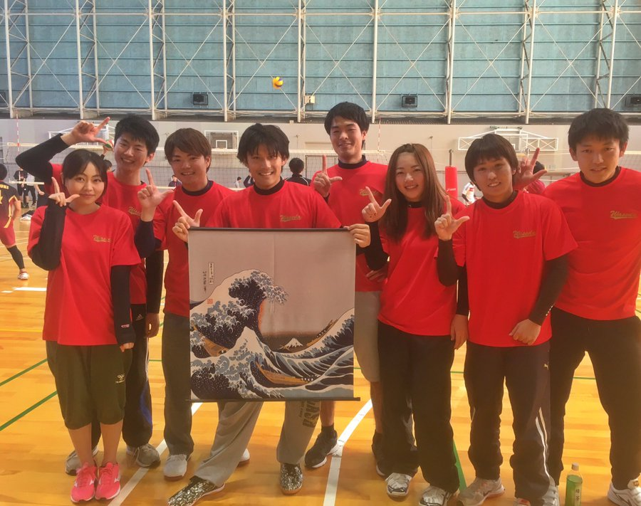
- 所沢カップ(バレーボール)ベスト8
予選リーグ第1試合 vs とこのみぃず ● 0-7
予選リーグ第2試合 vs アップセッターズ ○ 1-0
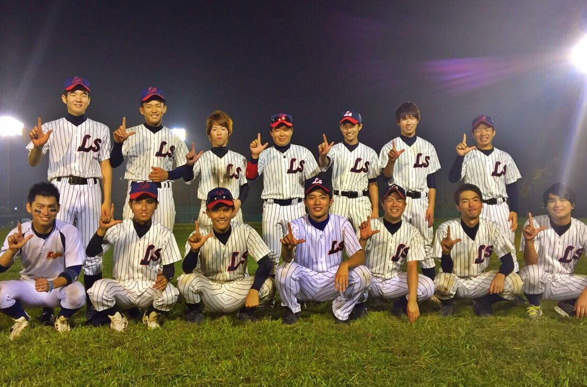1回戦 vs ドジポンズ4年 ○ 5-3
準決勝 vs デスペラード ● 2-6